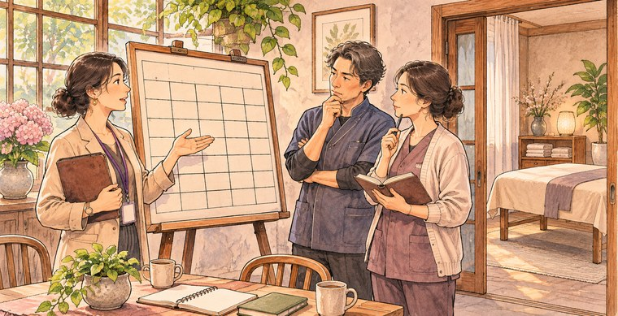

HSP-28 · 虛構非醫療康體工作室 · 15–20分鐘 · 多項資源協同編排 · 服務階段 · 須預留的周轉時間
預約排滿了，早上的安排可行嗎？

一項預約不只佔用一份時間表
Mindbody 討論水療服務的排程時，指出協調服務人員、房間和服務時長，是一個資源分配問題。Square 的處理時間文件則把一項預約分為不同階段。這些是供應商對自身營運概念的說明，並不能證明某項產品或某份時間表最好。
Google 的排程文件以例子說明先後次序及不得重疊的限制。英國健康及安全執行局（Health and Safety Executive，HSE）的美容服務指引另指出，安全管控和清潔都是須預先安排的工作，不能為了提高使用率而刪去。下文的時長和人手安排均為這個場地虛構的課堂假設，並非規定任何護理或衞生程序。
課堂決定
虛構的課堂情境。 一家非醫療康體工作室須在09:00至12:00之間安排四項成人預約：兩項較長的放鬆服務，編號為 L1 和 L2，以及兩項較短的提神服務，編號為 S1 和 S2。兩名資歷相同的服務人員 P 和 Q 各須提供一項 L 和一項 S，各自有一間獨立的普通服務室。所有顧客都同意接受早上任何經確認的開始時間；工作室尚未承諾確實時間。不得增加預約、由多名服務人員分擔同一項服務，或縮短服務時間。
每項 L 佔用服務人員連續六十分鐘，每項 S 則佔用四十五分鐘。每項服務結束後，服務人員須立即再用連續十分鐘整理普通服務室及填寫紀錄。兩人的固定休息時間均為10:15至10:30，不得中斷。服務和整理工作均不得跨越這段休息時間。所需的諮詢、移動和顧客轉場時間已計入服務時長。顧客在服務實際結束時離開，不必等到時間表上劃定的時段結束。
「統一時段」在每名服務人員的時間表上，為每項預約劃出七十五分鐘，包括所需的整理時間和任何用不完的預留時間。兩人擬定的開始時間均為09:00和10:30。「按時長編排」則為 L 劃出七十分鐘、為 S 劃出五十五分鐘，保留固定休息時間，寧可留空也不加插顧客。兩種方案的四項服務、價格、員工薪酬、顧客同意、無障礙支援和安全標準均相同，也不假設一名服務人員可以同時服務兩名顧客。
初稿安排 P 和 Q 都先做 L，再做 S。只看服務人員的時間，兩種方案都排得下。兩類服務共用一間專用服務室，但營運主管尚未交代各階段何時需要使用該房間。排程人員須先初步比較兩種方案，再逐一核對所需資源，才確認時間。工作室的目標是讓當天的服務安排可行而不倉促，而不是讓時間表看起來排得盡可能滿。
| 服務 | 服務人員連續服務時間 | 服務人員緊接的整理時間 | 按時長編排 | 統一時段 |
|---|
| L | 60分鐘 | 10分鐘 | 70分鐘 | 75分鐘 |
| S | 45分鐘 | 10分鐘 | 55分鐘 | 75分鐘 |
你的決定你會暫時採用哪種方案安排這四項預約？比較兩種方案各佔用多少服務人員的時間，保留休息和整理時間，並解釋為甚麼單憑這項計算還不能確定預約安排是否可行。
第二輪 · 多了一項資料
專用服務室的使用安排現已明確。每項 L 須使用專用服務室的時段是 開始後首二十分鐘，然後回到該服務人員的普通服務室繼續四十分鐘。每項 S 先在普通服務室進行三十分鐘，須使用專用服務室的時段是 最後十五分鐘。服務人員全程陪同同一名顧客，不得中斷。各階段不得調換次序，也不得暫停；轉場已計入所列時間。
專用服務室每次只可容納一名顧客及其服務人員。每次使用完畢，另一名受過訓練的房間管理員須立即用連續十分鐘完成所需的周轉清潔工作，其間房間不可使用。這個崗位已有經費，管理員在擬定的服務及周轉時段內沒有其他職務，並同樣在10:15–10:30休息。所有房間在09:00已準備妥當，最後各項整理工作均須在12:00前完成。這些時長是個案訂明的要求，並非通用清潔標準。
專用服務室的周轉工作，與服務人員在整項服務結束後用十分鐘整理普通服務室及填寫紀錄，是兩項不同的工作。由於涉及不同人員和房間，兩項工作可以同時進行。兩間普通服務室仍各自分配給原來的服務人員，沒有其他預約。不得加用房間、改用其他程序、超時工作或縮短周轉清潔時間。
若兩項 L 預約都在09:00開始，便會在09:00至09:20同時需要同一間專用服務室。因此，初稿雖然符合兩名服務人員的時間表，整體安排仍不可行。排程人員可調整每人做 L 和 S 的先後次序，按選定的方案安排可行的開始時間；顧客仍可配合。服務組合、休息時段和所有時長規則維持不變。
你的決定擬定一份可行的預約時間表，再另列專用服務室的時間表，包括每次周轉。新資料是否令你不得不放棄統一時段方案？還是無論採用哪種方案，都須另外協調資源？
比較兩種方案的答案
較可取的是 按時長編排 ，因為資源佔用一目了然。不過，空出的時間應視為緩衝，不代表可以立即多接預約。每名服務人員所需的服務及整理時間為六十 + 十 + 四十五 + 十 = 125分鐘 ，另加十五分鐘休息。統一時段方案劃出150分鐘供預約使用，加上同一休息時段，共165分鐘。按時長編排連休息共劃出140分鐘，每名服務人員的時間表可騰出二十五分鐘，合計五十分鐘。
這既不會節省五十分鐘的有薪工時，也不會騰出一個可供出售的五十分鐘預約時段。員工薪酬和需求不變，空檔也可能分散。統一時段較簡單，預留時間也較多，可以是合理的方案。即使每名服務人員的總時間足夠，也不能就此斷定哪種方案可行：各個使用共用房間的階段也須排得下。
一份可行的服務人員時間表
維持由 P 負責 L1（09:00–10:00），接着在10:00–10:10整理；之後在10:30–11:15做 S1，並在11:15–11:25整理。安排 Q 負責 S2（09:00–09:45），接着在09:45–09:55整理；之後在10:30–11:30做 L2，並在11:30–11:40整理。兩人均保留完整的10:15–10:30休息時段。
四名顧客各自由同一名服務人員提供完整服務。按時長編排可清楚列出這些確切時段及空檔。統一時段也可在09:00–10:15和10:30–11:45兩個時段內，採用相同的開始時間及服務次序。因此，新資料顯示須解決的是房間使用衝突，不一定要放棄統一時段。
另行核對共用房間的時間表
專用服務室：L1 在09:00–09:20使用，管理員在09:20–09:30完成周轉工作。S2 在09:30–09:45使用，周轉時間為09:45–09:55。L2 在10:30–10:50使用，周轉時間為10:50–11:00。S1 在11:00–11:15使用，周轉時間為11:15–11:25。每次均待上一次的周轉工作完成後才開始使用。
房間使用時間合計為二十 + 十五 + 二十 + 十五 = 70分鐘，四次周轉工作合共四十分鐘，所以房間共被佔用110分鐘。單看可用總時數，未能避免原先09:00的衝突。管理員的工作沒有與休息時段重疊，每項十分鐘的工作也有人手處理。專用服務室最後一次整理在11:25結束，服務人員最後一次整理則在11:40結束。
有空檔，不代表可以加插預約
如果 L 或 S 只在其中一個階段需要專用服務室，便不要為整項服務預留房間，除非實際的安全或私隱要求有此需要。同樣，周轉清潔仍在進行時，也不能把房間列為可用。把服務人員、普通服務室、使用專用服務室的階段及管理員的工作紀錄互相連結。
這份按固定時間逐步核對的時間表，只能證明按所給時間安排是可行的，不能保證顧客遲到或服務需要有變時仍行得通。實際營運時，須確認實際要求、適當的緩衝時間和延誤處理程序，不得削減服務、休息或衞生措施。餘下的空檔不保證排得下額外預約。核對資源後，才向顧客確認確切的開始和結束時間。
教師說明
先讓學生算出每名服務人員為預約及整理劃出的時間分別是150分鐘和125分鐘，再揭示09:00的共用房間衝突。要求學生同時提交流程時間表：一份列出服務人員的安排，另一份列出房間的使用及周轉。若答案讓房間在周轉清潔期間被使用、把仍在服務階段的服務人員視為有空，或跳過固定休息時段，均不予接納。
本個案與 OPS-07 不同，並非合併輪候隊伍或增設櫃位；也與 HSP-06 不同，並非把各組顧客配對至合適餐桌的靜態問題。不同階段所需的資源各異。所有服務均屬非醫療性質，且為虛構；個案不教授任何臨床、護理或衞生操作方法。例子只展示一份可行的時間表，並不證明可以最早完成，也不證明軟件的一般表現。
第二輪
專用服務室的使用安排現已明確。每項 L 須使用專用服務室的時段是 開始後首二十分鐘，然後回到該服務人員的普通服務室繼續四十分鐘。每項 S 先在普通服務室進行三十分鐘，須使用專用服務室的時段是 最後十五分鐘。服務人員全程陪同同一名顧客，不得中斷。各階段不得調換次序，也不得暫停；轉場已計入所列時間。
專用服務室每次只可容納一名顧客及其服務人員。每次使用完畢，另一名受過訓練的房間管理員須立即用連續十分鐘完成所需的周轉清潔工作，其間房間不可使用。這個崗位已有經費，管理員在擬定的服務及周轉時段內沒有其他職務，並同樣在10:15–10:30休息。所有房間在09:00已準備妥當，最後各項整理工作均須在12:00前完成。這些時長是個案訂明的要求，並非通用清潔標準。
專用服務室的周轉工作，與服務人員在整項服務結束後用十分鐘整理普通服務室及填寫紀錄，是兩項不同的工作。由於涉及不同人員和房間，兩項工作可以同時進行。兩間普通服務室仍各自分配給原來的服務人員，沒有其他預約。不得加用房間、改用其他程序、超時工作或縮短周轉清潔時間。
若兩項 L 預約都在09:00開始，便會在09:00至09:20同時需要同一間專用服務室。因此，初稿雖然符合兩名服務人員的時間表，整體安排仍不可行。排程人員可調整每人做 L 和 S 的先後次序，按選定的方案安排可行的開始時間；顧客仍可配合。服務組合、休息時段和所有時長規則維持不變。
你的決定擬定一份可行的預約時間表，再另列專用服務室的時間表，包括每次周轉。新資料是否令你不得不放棄統一時段方案？還是無論採用哪種方案，都須另外協調資源？